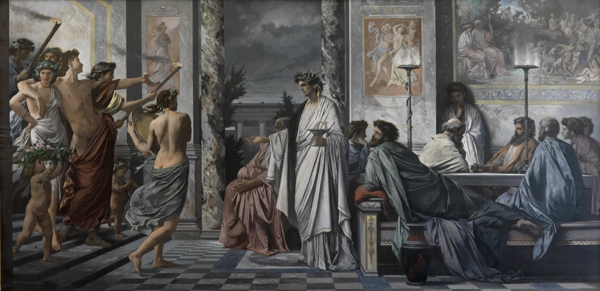
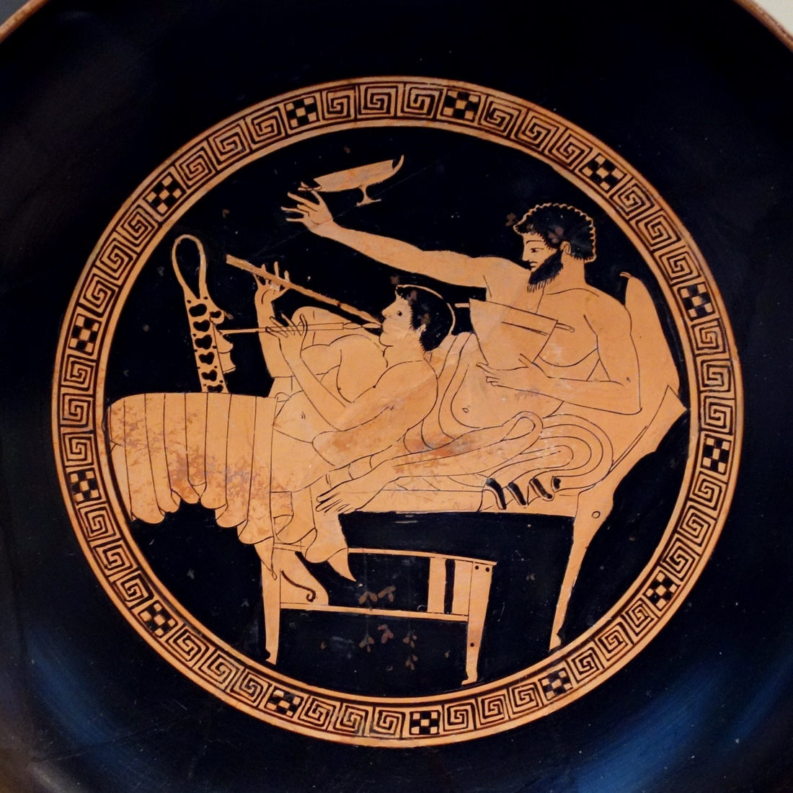

Aristophanes imagines two lovers asking to be welded into one being, sharing a life and a death. Socrates later praises a love that can lead beyond any one person. Both accounts belong to Plato's Symposium, a dialogue built around a drinking party.
The guests take turns praising Eros, the god of love and desire. Socrates reports what a teacher named Diotima told him: attraction to a person can begin an education that ends in knowledge of beauty itself. Then Alcibiades arrives drunk and describes his love for Socrates.
The featured translation is Benjamin Jowett's. Two panels compare short excerpts with Nehamas and Woodruff, and Christopher Gill.

Stop 1 / The setting
A party with a rule
Jowett / Symposium 177d, Socrates
"How can I oppose your motion, who profess to understand nothing but matters of love..."
The party celebrates Agathon's first victory as a tragic playwright, in 416 BC. Several guests are still recovering from the previous day's drinking. Eryximachus, a doctor, proposes that they drink as much or as little as they choose, dismiss the flute player, and take turns praising Love.
A symposion is a drinking party held after dinner. The invited speakers here are men, served by enslaved attendants. Several speeches assume courtship between an adult male lover and a younger male beloved, with unequal ages and social roles. Their arguments about education and virtue grow out of that convention.
Plato wrote the dialogue in the fourth century BC; the exact date is uncertain. Apollodorus narrates what he heard from Aristodemus, who attended the party years earlier. He says he checked some details with Socrates. 172a to 174a

Stop 2 / Three accounts
The first three speeches
Jowett / Symposium 180d, Pausanias
"...if there were only one Aphrodite there would be only one Love; but as there are two goddesses there must be two Loves."
Phaedrus praises love's power to make people brave. He imagines a city or army of lovers and their beloveds. Each would rather face danger than be seen acting shamefully by the other. 178a to 180b
Pausanias distinguishes Common Love from Heavenly Love. Common Love seeks bodies, whether male or female. Heavenly Love, in his account, concerns only males and should improve the younger partner's character. His standard allows a beloved to gratify a lover in exchange for help becoming virtuous. He ranks the male sex as stronger and more intelligent. 180c to 185c
Eryximachus extends the distinction to medicine, music, seasons, and relations with the gods. Good love brings opposing forces into harmony; disordered love produces illness and damage. Aristophanes was due to speak before him, but a fit of hiccups made them swap places. Once the doctor finishes his account of bodily harmony, Aristophanes reports that sneezing cured him. 185c to 189b
Stop 3 / Aristophanes
We were round, and we were cut in half
Jowett / Symposium 189e to 190a, Aristophanes
"The primeval man was round, his back and sides forming a circle; and he had four hands and four feet, one head with two faces, looking opposite ways..."
These first humans come in three kinds: male, female, and a combination of both. They can roll along on their limbs and are strong enough to threaten the gods.
Zeus cuts them in half to weaken them while keeping the offerings they provide. Apollo turns their faces toward the wound and gathers the skin into a navel. The halves embrace and refuse to do anything apart, until they begin to starve. Zeus then moves their genitals to the front, allowing sexual union to give them enough satisfaction to return to ordinary life. 190b to 191c
The different original bodies explain different attractions: male halves seek males, female halves seek females, and halves of the combined body seek the other sex. Aristophanes thinks they would accept an offer from the smith god Hephaestus to fuse them into one being, sharing a life and a death. 191d to 192e
Diotima will challenge the claim that reunion is what everyone wants, but Aristophanes is about to reply to Socrates when Alcibiades interrupts. We never hear his answer.
The wish for wholeness, three translations
At 192e, Aristophanes names the longing his myth explains. These are short excerpts from the same sentence.
Stop 4 / Desire
Socrates questions Agathon
Jowett / Symposium 201a, Socrates questions Agathon
"And the admission has been already made that Love is of something which a man wants and has not?"
Agathon praises Love as the youngest, most beautiful, and best of the gods. The guests applaud his account of Love's delicacy and his inspiration of the arts. Socrates asks to test the speech with questions.
Agathon agrees that Love desires beauty and that desire reaches for something absent. It follows that Love lacks beauty, contradicting his portrait of the beautiful god. The reasoning also applies to goodness. 199c to 201c
Socrates considers an objection: healthy people want to stay healthy, desiring something they already have. His answer is that they want to keep it in the future, which they don't yet possess. Desire can seek continued possession as well as something entirely absent. That qualification matters when Diotima asks why people want good things to last forever. 200b to 200e
Stop 5 / Diotima
Wanting the good to last
Jowett / Symposium 206a, Diotima as reported by Socrates
"Then love," she said, "may be described generally as the love of the everlasting possession of the good?"
Socrates attributes his account to Diotima, a woman from Mantinea who taught him about love. Whether she was a historical person is disputed. We know her teaching through Plato's portrayal of Socrates.
Diotima says there can be something between beauty and ugliness, or wisdom and ignorance. Eros is a daimon, a spirit mediating between mortals and gods. In her birth story, Penia, Poverty, finds Poros, Resource, drunk and asleep after the celebration of Aphrodite's birth. She lies with him and conceives Eros. He inherits need from his mother and the ability to find a way from his father. 202a to 203e
Her Eros is barefoot, homeless, resourceful, and always seeking what he lacks. He is also a philosopher, a lover of wisdom. The gods already possess wisdom; the thoroughly ignorant are satisfied with themselves. Eros seeks wisdom because he knows he needs it.
She connects love with happiness: we want good things to be ours forever. Against Aristophanes, she points out that people let doctors remove a diseased limb. We want what is good, even when that means giving up a part of ourselves. 204d to 206a
Mortality puts that wish out of reach. Diotima says living things seek a share in immortality by producing something that survives them. People have children, but they can also be pregnant in soul, giving birth to poems, laws, or ideas that help others live well. She points to Homer and the lawgiver Solon as people whose creations remain after their deaths. Lovers can form a lasting bond by raising such offspring together. 206b to 209e
She calls this giving birth in beauty: beauty draws out something the lover can create.
Stop 6 / The ascent
The ladder to beauty itself
Jowett / Symposium 211c, Diotima as reported by Socrates
"...using these as steps only, and from one going on to two, and from two to all fair forms, and from fair forms to fair practices, and from fair practices to fair notions, until from fair notions he arrives at the notion of absolute beauty..."
With proper guidance, a young lover begins with one beautiful body and produces beautiful ideas in its company. He recognizes the beauty shared by other bodies and loosens his exclusive attachment to one.
Next he learns to value beauty in souls more than beauty in bodies. He can love and care for someone whose body is unremarkable, helping that person become better. This leads to the beauty in ways of life and laws, then in different kinds of knowledge. At last, after this education, he suddenly sees beauty itself. 210a to 211a
That final beauty never comes into being or passes away. It isn't beautiful from one angle and ugly from another, or beautiful to some people and ugly to others. It has no face or hands and exists independently of the things that share in it. This is a Platonic Form: an unchanging reality that particular beautiful things participate in. 211a to 211b
The result is still described as giving birth. Someone who knows beauty itself can produce and nourish true virtue. Diotima ends by holding out friendship with the gods and immortality, if any human can attain it. Socrates says he is persuaded by her account. 212a to 212b
If someone's beauty matters because it reveals a beauty shared by everyone, what makes that particular person irreplaceable? Gregory Vlastos pressed this objection in "The Individual as Object of Love in Plato." Yet Diotima also describes care for a beloved and creations nurtured together. She doesn't say what becomes of that relationship once the lover sees beauty itself. Reeve discusses the competing readings.
Bodies, customs, knowledge: two translations
Two excerpts from 211c. Jowett's "forms" here are bodies; his "practices" are ways of life. Nehamas and Woodruff make those stages more explicit.
Stop 7 / Alcibiades
Alcibiades praises Socrates
Jowett / Symposium 219c to 219d, Alcibiades
"...in the morning when I awoke ... I arose as from the couch of a father or an elder brother."
Alcibiades arrives drunk, crowned with ivy and violets, supported by a flute player and companions. He came to crown Agathon, but finds Socrates beside him. He takes over the drinking and agrees to praise Socrates.
Socrates resembles a carved figure of Silenus, Alcibiades says: comic on the outside, opening to reveal divine images within. His words make Alcibiades ashamed of neglecting himself while pursuing public honors. Alcibiades knows he ought to change his life, but repeatedly escapes back to the approval of the crowd. 215a to 216c
He describes trying to seduce Socrates when he was younger. He hoped to exchange his physical beauty for the older man's wisdom. Socrates questioned the bargain, comparing it to exchanging brass for gold, and warned that Alcibiades might be mistaken about what he had to offer. Alcibiades nevertheless spent a night embracing him under his cloak. No sexual encounter followed. 217a to 219d
Alcibiades feels humiliated and remains attached to him. But his account also includes Socrates' endurance on campaign, his courage during retreat, and his rescue of the wounded Alcibiades at Potidaea. These are acts of care for a particular person. They complicate the claim that Socrates' philosophical detachment amounts to indifference. 219e to 221c
One reading of the refusal is that sharing a bed won't transfer wisdom. Alcibiades has admired Socrates without changing the life he admits is inadequate.
Stop 8 / The ending
The conversation at dawn
Jowett / Symposium 223d, Aristodemus' recollection
"Aristodemus was only half awake, and he did not hear the beginning of the discourse..."
More revelers enter, drinking becomes compulsory, and the orderly speeches end. Aristodemus sleeps until cockcrow. When he wakes, Socrates, Aristophanes, and Agathon are still talking over a shared cup.
Socrates is getting the two playwrights to agree that someone who understands the art of tragedy can also write comedy. They are too drowsy to follow him properly, and both fall asleep. Socrates leaves, bathes at the Lyceum, and spends his day as usual.
The account ends without the argument explaining why the two arts require the same understanding. 223b to 223d
Texts and reading notes
The main passages are excerpts from Benjamin Jowett's translation. Ellipses mark omissions. The references, such as 192e, are Stephanus numbers: page and letter divisions that let readers find the same passage in different editions.
- Translation comparisons: Alexander Nehamas and Paul Woodruff, Symposium (Hackett, 1989), 192e and 211c; Christopher Gill, The Symposium (Penguin, 1999), 192e. These panels use brief extracts, not complete passages. Gill's wording is also quoted in Thomas Butler's article, note 25.
- Interpretation: C. D. C. Reeve's "Plato on Friendship and Eros" discusses the ascent, the social setting, and Alcibiades. Vlastos' objection concerns whether Plato can account for love of a whole individual.
- Later reception: The familiar expression "Platonic love" has a long history after Plato. Marsilio Ficino's Renaissance reading of love helped shape it. Calling a friendship "platonic" today doesn't give a definition of the desire Diotima describes.
Feuerbach's painting is in the Staatliche Kunsthalle Karlsruhe. Source records: painting and drinking cup.

.jpg){kind=link}